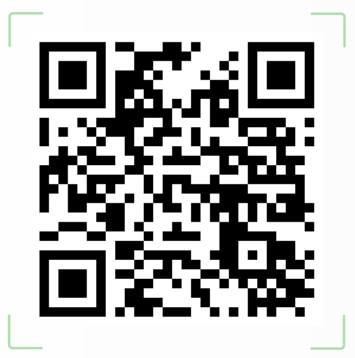

Tarea previa: recordamos y comenzamos
|
Secuenciación: sesión de 55 minutos Objetivos:
|
Antes de comenzar nuestra aventura como divulgadores y divulgadoras de la historia de estas desconocidas figuras femeninas, es necesario que recuperemos algunos contenidos que ya hemos trabajado en clase sobre el papel de la mujer en la Antigua Roma. Esto nos ayudará a comprender mejor el contexto en el que vivieron las protagonistas de nuestro proyecto.
Por tanto, ¿qué vamos a hacer en esta sesión?
Realizaremos dos tareas fundamentales:
1. Recordamos lo aprendido: para refrescar los contenidos, utilizaremos una presentación que ya hemos trabajado en clase.
DESCUBRE QUÉ SIGNIFICA SER MUJER EN LA ANTIGUA ROMA
Gracias a esta presentación:
- Recordaremos las características de la sociedad romana.
- Revisaremos el papel de la mujer en distintos ámbitos.
- Comentaremos ejemplos que ya conocemos.
- El objetivo es activar vuestros conocimientos previos y preparar el nuevo trabajo.
2. Comenzamos el proyecto:
Una vez revisados los contenidos:
- Se explicará en detalle el proyecto Voces Feminarum.
- Se asignará a cada alumno/a o pareja una mujer romana.
- La elección de las figuras la realizará la profesora, teniendo en cuenta los trabajos realizados durante la primera evaluación, con el objetivo de equilibrar los temas y facilitar el trabajo, pues muchas de ellas están relacionadas con la temática que ya han trabajado previamente.
En el siguiente QR se puede acceder al documento PDF en el que se presentan las figuras femeninas escogidas. La fuente consultada ha sido Historia de Roma en 21 mujeres (Southon, 2023)

Vocabulario
Puesto que vamos a estar trabajando sobre diferentes figuras femeninas, es importante que reflexionemos también sobre el lenguaje que utilizamos y sobre el origen de muchas palabras relacionadas con la mujer y su papel en la sociedad.
La etimología es el estudio del origen de las palabras y de cómo han evolucionado a lo largo del tiempo. Nos permite entender de dónde vienen y por qué tienen el significado que tienen hoy en día.
A continuación, podéis observar algunos términos latinos relacionados con la mujer en Roma y su evolución en español...
1. Copiad el listado en vuestra libreta.
2. Traducid las palabras al español.
3. Añadid más palabras españolas relacionadas con la palabra latina.
Recordadlas...porque quizá os son de utilidad más adelante... ;)
mater: materno, maternidad,
matrona: matrimonio,
femina: femenino, feminismo,
domina: dominio, dominar,
soror: sororidad,
filia: filiación
nutrix: nutrición,